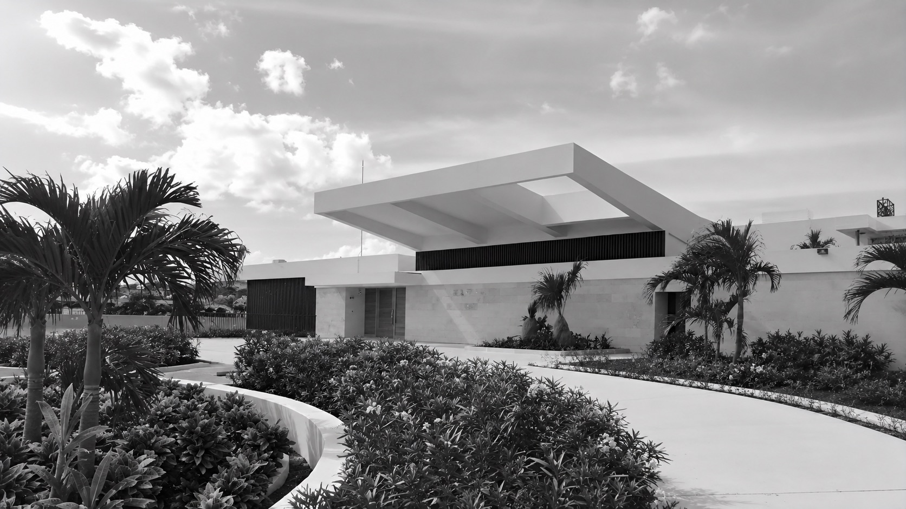

Selected work
A careful selection
All projects

Design, coordination, and supervision for high-end
residential landscapes in France and beyond.
I design private outdoor spaces that balance architecture, vegetation, and atmosphere. Each project is approached with discretion, precision, and a long-term view of how a place will be lived in.
Working exclusively with private clients, architects, and selected contractors, I take responsibility for the full coherence of the result — from initial concept through to completion and beyond.
The approachEach garden is designed as a specific response to its site, architecture, and the way it will be used. Atmosphere is not decoration — it is the result of precise spatial decisions.
I work with a small network of selected craftsmen, stonemasons, planters, and irrigation specialists. This ensures the design intent is preserved through every stage of execution.
From first visit to final planting, I remain the single point of responsibility. Clients work with one person who understands both the vision and the details.

Over many years of practice, I have worked on private residences across France — from historic country estates to contemporary urban properties. Each commission demands the same level of care, discretion, and precision.
I collaborate regularly with architects, interior designers, and property developers who require a landscape partner capable of operating at the highest level.
Projects are accepted selectively. If you are working on a residence where the outdoor space deserves serious attention, please get in touch.
Get in touch